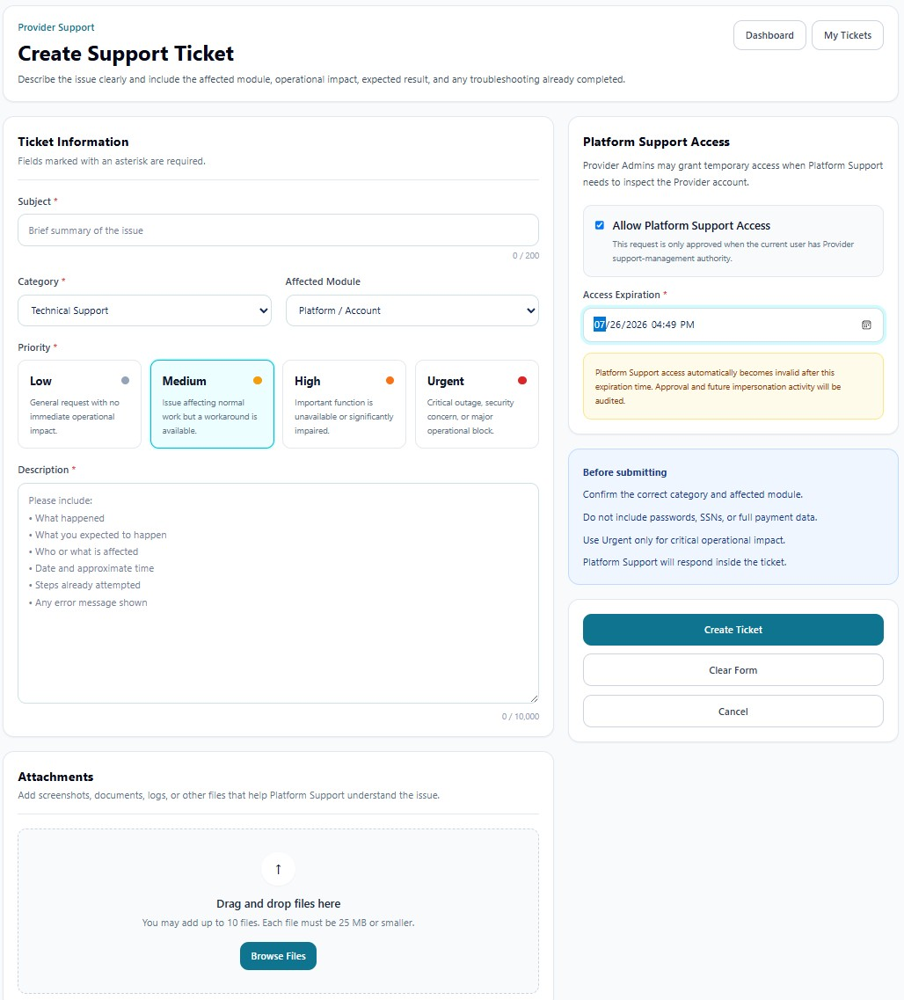

SUPPORT • REQUEST INTAKE
Create Support Ticket
Create a structured Provider-scoped support request with classification, priority, attachments, and optional time-limited Platform Support access.
Support tickets may contain PHI, screenshots, operational records, user identities, device details, IP addresses, and troubleshooting evidence. Public screenshots in this guide use redacted or demonstration information. Users must not place passwords, full Social Security numbers, complete payment-card information, or unrelated PHI in a ticket.
True Care System assigns every ticket a unique Provider-scoped ticket number, preserves ticket conversations and attachments, records support-access approval and expiration, and logs each authorized support or impersonation session. The audit trail is designed to show who requested access, who approved it, when access began and ended, which Provider was entered, and what actions were performed during the support session.
Purpose
Create Support Ticket records a structured Provider support request and automatically assigns a unique ticket number after submission. The ticket becomes the controlling record for messages, attachments, support access, impersonation sessions, troubleshooting actions, and final resolution.

Ticket Information
| Field | Function |
|---|---|
| Subject | Provides a concise summary of the problem. The field supports up to the displayed character limit. |
| Category | Classifies the request, such as Technical Support, Mobile App, Reports, Scheduling, Billing, Payroll, Sandata, or account support. |
| Affected Module | Identifies the specific True Care System area affected by the issue. |
| Priority | Defines Low, Medium, High, or Urgent operational impact. |
| Description | Records what happened, expected behavior, affected users or workflow, date and approximate time, troubleshooting already attempted, and any error message. |
Priority Definitions
| Priority | Recommended Use |
|---|---|
| Low | General request with no immediate operational impact. |
| Medium | Normal work is affected, but an acceptable workaround remains available. |
| High | An important function is unavailable or significantly impaired. |
| Urgent | Critical outage, serious security concern, widespread service interruption, or major operational block. |
Platform Support Access
Allow Platform Support Access authorizes temporary access only when investigation inside the Provider environment is necessary. The request is valid only when the current user has Provider support-management authority.
| Control | Function |
|---|---|
| Allow Platform Support Access | Records the Provider's approval for temporary Platform Support access. |
| Access Expiration | Defines the exact date and time when approval becomes invalid automatically. |
| Audit behavior | Approval, expiration, impersonation start/end, and future support actions are retained in the audit trail. |
Attachments
The attachment area accepts screenshots, documents, logs, and other evidence that helps Platform Support understand the issue. The interface indicates the maximum number of files and maximum size per file. Attach only information necessary for the specific support purpose.
Submission Actions
| Action | Function |
|---|---|
| Create Ticket | Validates the form, creates the Provider-scoped record, assigns the unique support ticket number, and records the requester. |
| Clear Form | Removes entered values before submission. |
| Cancel | Leaves the creation workflow without creating a ticket. |
Before Submitting
- Confirm the correct category and affected module.
- Describe the operational impact and exact error.
- Do not include passwords, full SSNs, or full payment data.
- Use Urgent only for critical impact.
- Approve Platform Support access only when needed and select the shortest reasonable expiration period.